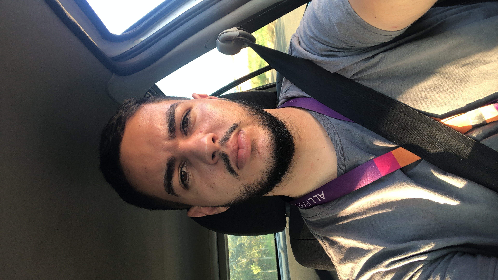

Bem Vindo ao meu
Portifólio
Aqui você Irá conhecer meus projetos, e conhecer um pouco mais da minha jornada no mundo da programação!
Aqui você Irá conhecer meus projetos, e conhecer um pouco mais da minha jornada no mundo da programação!
Desde sempre, meu fascínio pela tecnologia moldou meu percurso. Estou constantemente atualizado sobre as últimas tendências, ferramentas e frameworks que impulsionam o universo.
Minha verdadeira paixão reside no desenvolvimento Front-End, onde posso dar vida a conceitos visuais e criar experiências digitais cativantes. Estou em busca de oportunidades que me permitam aprimorar minhas habilidades e contribuir para projetos inovadores.
